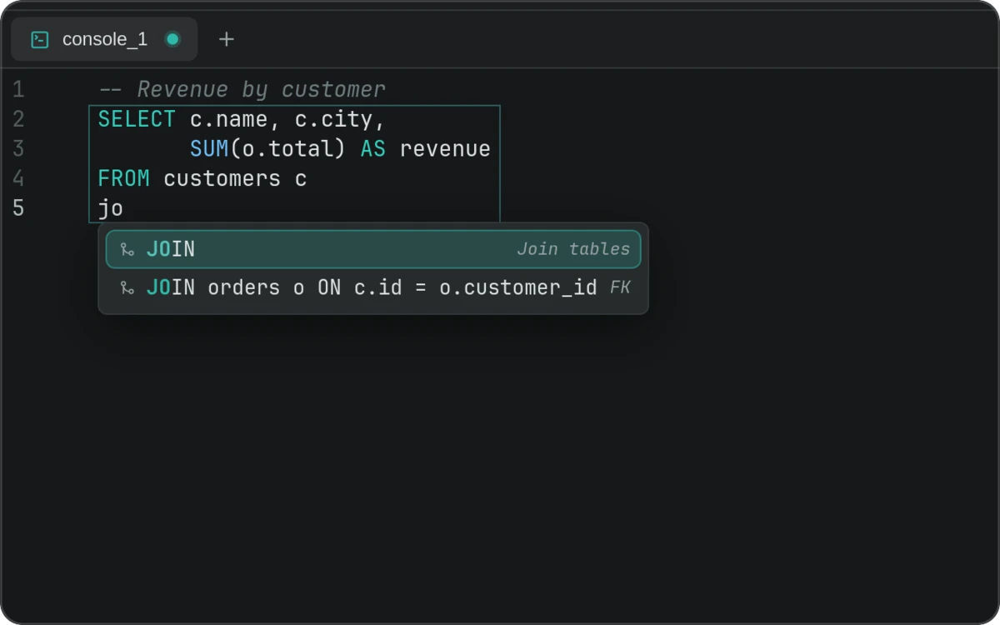
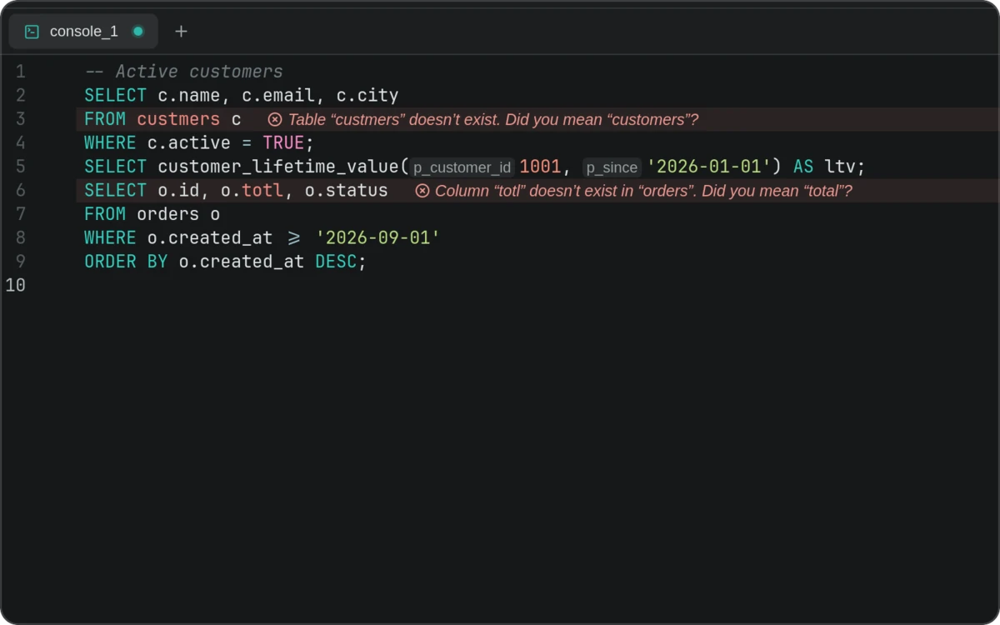
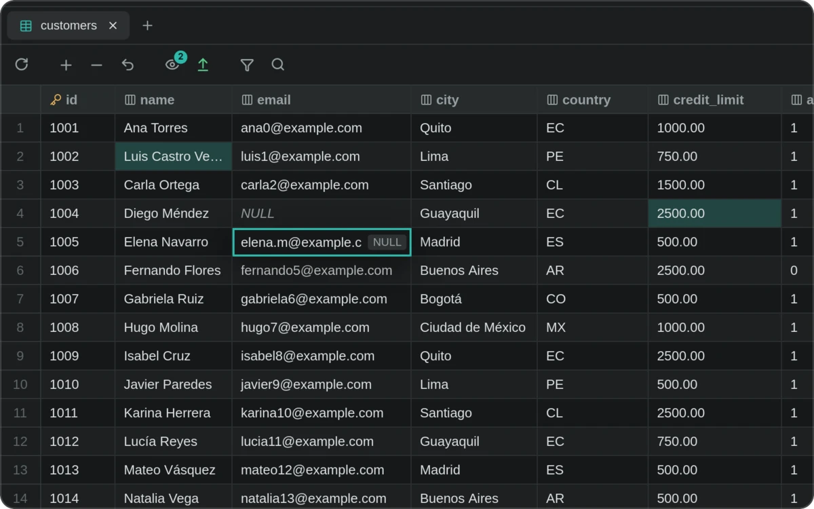
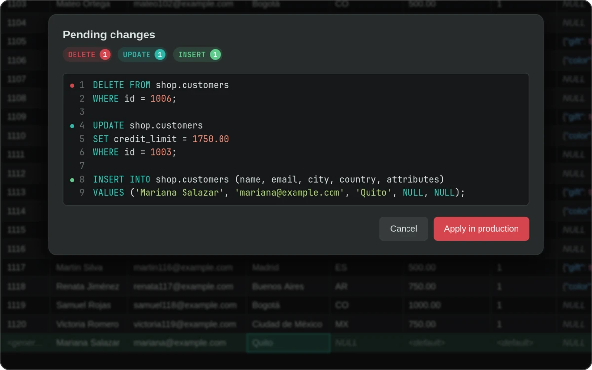
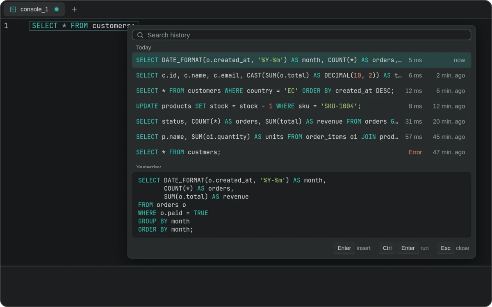

Autocompletado que conoce tu esquema
Tablas, columnas y JOIN completos a partir de tus claves foráneas.

Escribe consultas con un editor que conoce tu esquema, edita los resultados en la celda y revisa cada cambio antes de ejecutarlo.
Windows · macOS · Linux · MIT o Apache 2.0 · todas las versiones

Tablas, columnas y JOIN completos a partir de tus claves foráneas.

Tablas y columnas que no existen, con el nombre que querías.

Nada se escribe hasta que aplicas.

Cada cambio se vuelve el SQL exacto que apruebas.

Cada consulta que ejecutaste, a una tecla.

Cada acción tiene su atajo, y F1 los muestra todos.
Versión más reciente · las actualizaciones llegan en Ajustes, cuando tú decides.